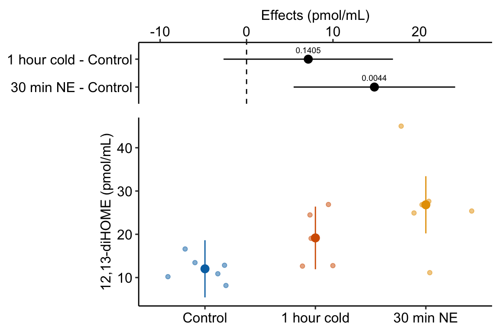
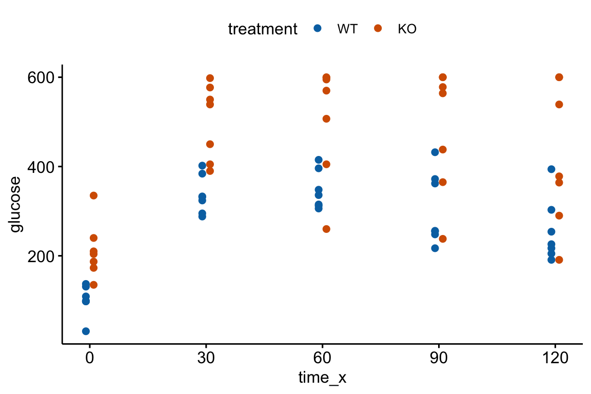
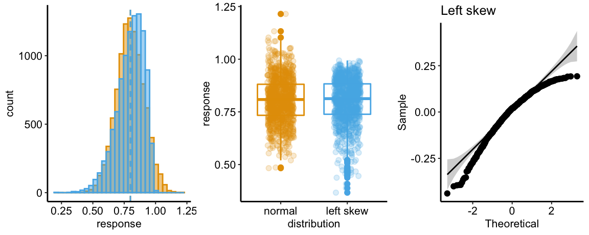
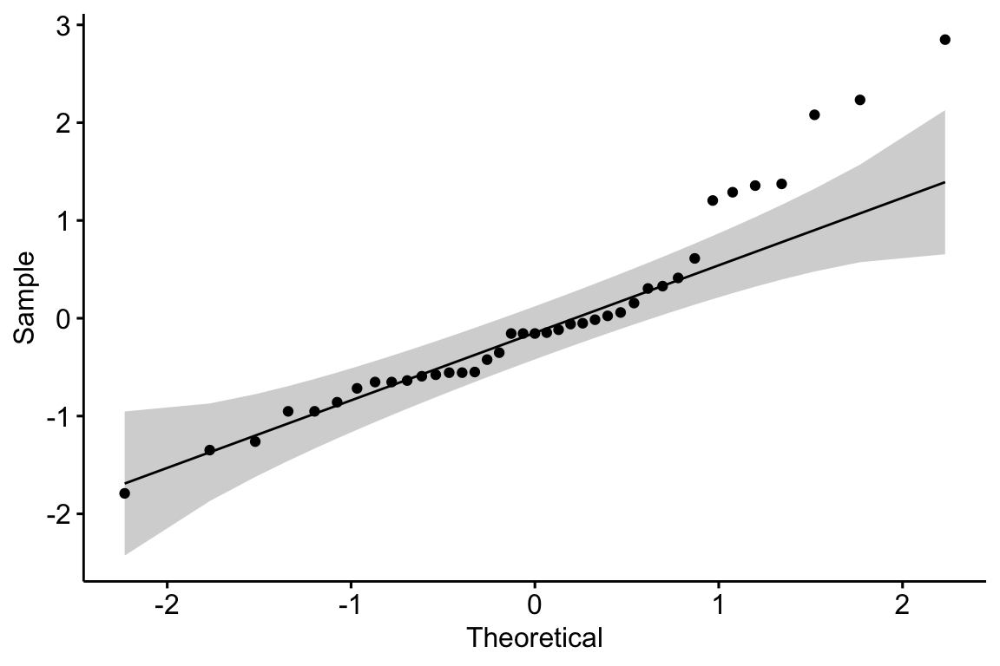

- Preface
- Part I: Getting Started
- 1 Getting Started – R Projects and R Markdown
- Part II: An introduction to the analysis of experimental data with a linear model
- 2 Analyzing experimental data with a linear model
- Background physiology to the experiments in Figure 2 of “ASK1 inhibits browning of white adipose tissue in obesity”
- Analyses for Figure 2 of “ASK1 inhibits browning of white adipose tissue in obesity”
- 2.2 Setup
- 2.3 Data source
- 2.4 control the color palette
- 2.5 useful functions
- 2.6 figure 2b – effect of ASK1 deletion on growth (body weight)
- 2.7 Figure 2c – Effect of ASK1 deletion on final body weight
- 2.7.1 Figure 2c – import
- 2.7.2 Figure 2c – check own computation of weight change v imported value
- 2.7.3 Figure 2c – exploratory plots
- 2.7.4 Figure 2c – fit the model: m1 (lm)
- 2.7.5 Figure 2c – check the model: m1
- 2.7.6 Figure 2c – fit the model: m2 (gamma glm)
- 2.7.7 Figure 2c – check the model, m2
- 2.7.8 Figure 2c – inference from the model
- 2.7.9 Figure 2c – plot the model
- 2.7.10 Figure 2c – report
- 2.8 Figure 2d – Effect of ASK1 KO on glucose tolerance (whole curve)
- 2.9 Figure 2e – Effect of ASK1 deletion on glucose tolerance (summary measure)
- 2.10 Figure 2f – Effect of ASK1 deletion on glucose infusion rate
- 2.11 Figure 2g – Effect of ASK1 deletion on tissue-specific glucose uptake
- 2.12 Figure 2h
- 2.13 Figure 2i – Effect of ASK1 deletion on liver TG
- 2.14 Figure 2j
- Part III: R fundamentals
- 3 Data – Reading, Wrangling, and Writing
- 4 Plotting Models
- Part IV: Some Fundamentals of Statistical Modeling
- 5 Variability and Uncertainty (Standard Deviations, Standard Errors, Confidence Intervals)
- 6 P-values
- 6.1 A p-value is the probability of sampling a value as or more extreme than the test statistic if sampling from a null distribution
- 6.2 Pump your intuition – Creating a null distribution
- 6.3 A null distribution of t-values – the t distribution
- 6.4 P-values from the perspective of permutation
- 6.5 Parametric vs. non-parametric statistics
- 6.6 frequentist probability and the interpretation of p-values
- 6.7 Some major misconceptions of the p-value
- 6.7.1 Misconception: p is the probability that the null is true and \(1-p\) is probability that the alternative is true
- 6.7.2 Misconception: a p-value is repeatable
- 6.7.3 Misconception: 0.05 is the lifetime rate of false discoveries
- 6.7.4 Misconception: a low p-value indicates an important effect
- 6.7.5 Misconception: a low p-value indicates high model fit or high predictive capacity
- 6.8 What the p-value does not mean
- 6.9 Recommendations
- 6.10 Problems
- 7 Errors in inference
- Part V: Introduction to Linear Models
- 8 An introduction to linear models
- 8.1 Two specifications of a linear model
- 8.2 A linear model can be fit to data with continuous, discrete, or categorical \(X\) variables
- 8.3 Statistical models are used for prediction, explanation, and description
- 8.4 What do we call the \(X\) and \(Y\) variables?
- 8.5 Modeling strategy
- 8.6 Predictions from the model
- 8.7 Inference from the model
- 8.8 “linear model,”regression model“, or”statistical model"?
- 9 Linear models with a single, continuous X
- 9.1 A linear model with a single, continuous X is classical “regression”
- 9.1.1 Analysis of “green-down” data
- 9.1.2 Learning from the green-down example
- 9.1.3 Using a regression model for “explanation” – causal models
- 9.1.4 Using a regression model for prediction – prediction models
- 9.1.5 Using a regression model for creating a new response variable – comparing slopes of longitudinal data
- 9.1.6 Using a regression model for for calibration
- 9.2 Working in R
- 9.2.1 Fitting the linear model
- 9.2.2 Getting to know the linear model: the
summaryfunction - 9.2.3 Inference – the coefficient table and Confidence intervals
- 9.2.4 How good is our model? – Model checking
- 9.2.5 Plotting models with continuous X
- 9.2.6 Creating a table of predicted values and 95% prediction intervals
- 9.3 Hidden code
- 9.4 Try it
- 9.5 Intuition pumps
- 9.1 A linear model with a single, continuous X is classical “regression”
- 10 Linear models with a single, categorical X
- 11 Model Checking
- 12 Model Fitting and Model Fit (OLS)
- 13 Best practices – issues in inference
- Part VI: More than one \(X\) – Multivariable Models
- 14 Adding covariates to a linear model
- 14.1 Adding covariates can increases the precision of the effect of interest
- 14.2 Understanding a linear model with an added covariate – heart necrosis data
- 14.3 Understanding interaction effects with covariates
- 14.4 Understanding ANCOVA tables
- 14.5 Working in R
- 14.6 Best practices
- 14.7 Best practices 2: Use a covariate instead of normalizing a response
- 15 Two (or more) Categorical \(X\) – Factorial designs
- 15.1 Factorial experiments
- 15.1.1 Model coefficients: an interaction effect is what is leftover after adding the treatment effects to the control
- 15.1.2 What is the biological meaning of an interaction effect?
- 15.1.3 The interpretation of the coefficients in a factorial model is entirely dependent on the reference…
- 15.1.4 Estimated marginal means
- 15.1.5 In a factorial model, there are multiple effects of each factor (simple effects)
- 15.1.6 Marginal effects
- 15.1.7 The additive model
- 15.1.8 Reduce models for the right reason
- 15.1.9 What about models with more than two factors?
- 15.2 Reporting results
- 15.3 Working in R
- 15.4 Problems
- 15.1 Factorial experiments
- 16 ANOVA Tables
- 17 Predictive Models
- Part VII – Expanding the Linear Model
- 18 Models with random effects – Blocking and pseudoreplication
- 18.1 Random effects
- 18.2 Random effects in statistical models
- 18.3 Linear mixed models are flexible
- 18.4 Blocking
- 18.5 Pseudoreplication
- 18.6 Mapping NHST to estimation: A paired t-test is a special case of a linear mixed model
- 18.7 Advanced topic – Linear mixed models shrink coefficients by partial pooling
- 18.8 Working in R
- 19 Models for longitudinal experiments – pre-post designs
- 19.1 Best practice models
- 19.2 Common alternatives that are not recommended
- 19.3 Advanced models
- 19.4 Understanding the alternative models
- 19.4.1 (M1) Linear model with the baseline measure as the covariate (ANCOVA model)
- 19.4.2 (M2) Linear model of the change score (change-score model)
- 19.4.3 (M3) Linear model of post-baseline values without the baseline as a covariate (post model)
- 19.4.4 (M4) Linear model with factorial fixed effects (fixed-effects model)
- 19.4.5 (M5) Repeated measures ANOVA
- 19.4.6 (M6) Linear mixed model
- 19.4.7 (M7) Linear model with correlated error
- 19.4.8 (M8) Constrained fixed effects model with correlated error (cLDA model)
- 19.4.9 Comparison table
- 19.5 Example 1 – a single post-baseline measure (pre-post design)
- 19.6 Working in R
- 20 Generalized linear models I: Count data
- 20.1 The generalized linear model
- 20.2 Count data example – number of trematode worm larvae in eyes of threespine stickleback fish
- 20.2.1 Modeling strategy
- 20.2.2 Checking the model I – a Normal Q-Q plot
- 20.2.3 Checking the model II – scale-location plot for checking homoskedasticity
- 20.2.4 Two distributions for count data – Poisson and Negative Binomial
- 20.2.5 Fitting a GLM with a Poisson distribution to the worm data
- 20.2.6 Model checking fits to count data
- 20.2.7 Fitting a GLM with a Negative Binomial distribution to the worm data
- 20.3 Working in R
- 20.4 Problems
- 21 Linear models with heterogenous variance
- Part V: Expanding the Linear Model – Generalized Linear Models and Multilevel (Linear Mixed) Models
- 22 Plotting functions (#ggplotsci)
- Appendix 1: Getting Started with R
- Appendix 2: Online Resources for Getting Started with Statistical Modeling in R
- Appendix 3: Fake Data Simulations
10.1 A linear model with a single, categorical X variable estimates the effects of the levels of X on the response.
To introduce a linear model with a single, categorical \(X\) variable, I’ll use data from a set of experiments designed to measure the effect of the lipid 12,13-diHOME on brown adipose tissue (BAT) thermoregulation and the mechanism of this effect.
Download the source data files and move to a new folder named “The cold-induced lipokine 12,13-diHOME promotes fatty acid transport into brown adipose tissue”.
Cold temperature and the neurotransmitter/hormone norepinephrine are known to stimulate increased thermogenesis in BAT cells. In this project, the researchers probed the question “what is the pathway that mediates the effect of cold-exposure on BAT thermogenesis?”. In the “discovery” component of this project, the researchers measured plasma levels of 88 lipids with known signaling properties in humans exposed to one hour of both normal (20 °C) and cold temperature (14 °C) temperature. Of the 88 lipids, 12,13-diHOME had the largest response to the cold treatment. The researchers followed this up with experiments on mice.
10.1.1 Example 1 – two treatment levels (“groups”)
Let’s start with the experiment in Figure 3d, which was designed to measure the effect of 12,13-diHOME on plasma triglyceride level. If 12,13-diHOME stimulates BAT activity, then levels in the 12,13-diHOME mice should be less than levels in the control mice.
response variable: serum_tg, a continuous variable.
treatment variable: treatment, with levels: “Vehicle”, “12,13-diHOME” (the control or “Vehicle” mice were injected with saline). Coded as a factor.
design: single, categorical X
10.1.1.1 Step 1 – import
The first step in any analysis is to open the data and, if necessary, wrangle into an analyzable format. The script to import these data is in the section Hidden code below.
10.1.1.2 Step 2 – examine the data
The second step is to examine the data to
- get a sense of sample size and balance
- check for biologically implausible outliers that suggest measurement failure, or transcription error (from a notebook, not in a cell)
- assess outliers for outlier strategy or robust analysis
- assess reasonable distributions and models for analysis.

There are no obviously implausible data points. A normal distribution is a good, reasonable start. This can be checked more thoroughly after fitting the model.
10.1.1.4 Step 4 – check the model

The Q-Q plot indicates the distribution of residuals is well within that expected for a normal sample and there is no cause for concern with inference.

##
## Suggested power transformation: 0.8167264The spread-location plot shows no conspicuous trend in how the spread changes with the conditonal mean. There is no cause for concern with inference.
10.1.1.5 Step 5 – inference
10.1.1.5.1 coefficient table
## Estimate Std. Error t value Pr(>|t|)
## (Intercept) 42.620042 1.667226 25.563447 1.926081e-10
## treatment12,13-diHOME -7.167711 2.357813 -3.039982 1.246296e-02
## 2.5 % 97.5 %
## (Intercept) 38.90523 46.334853
## treatment12,13-diHOME -12.42125 -1.91417510.1.1.5.2 Marginal means table
## treatment emmean SE df lower.CL upper.CL
## Vehicle 42.6 1.67 10 38.9 46.3
## 12,13-diHOME 35.5 1.67 10 31.7 39.2
##
## Confidence level used: 0.9510.1.1.6 Step 6 – plot the model
The script for plotting the model in the section Hidden code below.

10.1.1.7 Step 7 – report the model results
Mean serum TG in mice with 12,13-diHOME (35.5 µg/dL, 95% CI: 31.7, 39.2) was 7.17 µg/dL less (95% CI: -12.4, -1.9, \(p = 0.012\)) than mean serum TG in control mice (42.6 µg/dL, 95% CI: 38.9, 46.3).
10.1.2 Understanding the analysis with two treatment levels
The variable \(treatment\) in the Figure 3d mouse experiment, is a single, categorical \(X\) variable. In a linear model, categorical variables are called factors. \(treatment\) can take two different values, “Vehicle” and “12,13-diHOME”. The different values in a factor are the factor levels (or just “levels”). “Levels” is a strange usage of this word; a less formal name for levels is “groups”. In a Nominal categorical factor, the levels have no units and are unordered, even if the variable is based on a numeric measurement. For example, I might design an experiment in which mice are randomly assigned to one of three treatments: one hour at 14 °C, one hour at 18 °C, or one hour at 26 °C. If I model this treatment as a nominal categorical factor, then I simply have three levels. While I would certainly choose to arrange these levels in a meaningful way in a plot, for the analysis itself, these levels have no units and there is no order. Ordinal categorical factors have levels that are ordered but there is no information on relative distance. The treatment at 18 °C is not more similar to 14 °C than to 26 °C. Nominal categorical factors is the default in R and how all factors are analyzed in this text.
10.1.2.1 Linear models are regression models
The linear model fit to the serum TG data is
\[\begin{align} serum\_tg &= treatment + \varepsilon\\ \varepsilon &~ N(0, sigma^2) \tag{9.5} \end{align}\]
This specification is potentially confusing because the variable \(treatment\) is a factor containing the words “Vehicle” and “12,13-diHOME” and not numbers. A linear model with a single factor containing two levels can be specified using notation for a regression model.
\[\begin{align} Y &= \beta_0 + \beta_1 X_1 + \varepsilon\\ \varepsilon &\sim N(0, \sigma^2) \tag{9.6} \end{align}\]
Model (9.6) is a regression model where \(X_1\) is not the variable \(treatment\), containing the words “Vehicle” or “12,13-diHOME” but a numeric variable that indicates group membership, containing the number 1 if the element belongs to the first non-reference level (if there are only two levels, then there is only a single, non-reference level) and the number 0 if the element doesn’t belong to the first non-reference level.
For the serum TG data, “Vehicle” is the reference, so we can write the linear model fit to the serum TG data using regression model notation.
\[\begin{align} serum\_tg &= \beta_0 + \beta_1 treatment_{12,13-diHOME} + \varepsilon\\ \varepsilon &\sim N(0, \sigma^2) \tag{9.7} \end{align}\]
Model (9.7) is a regression model where \(treatment_{12,13-diHOME}\) is not the variable \(treatment\), containing the words “Vehicle” or “12,13-diHOME” but a numeric variable that indicates membership in the level “12,13-diHOME”. This variable contains the number 1 if the element belongs to “12,13-diHOME” and the number 0 if the element doesn’t belong to “12,13-diHOME”. More generally, model (9.6) is a regression model where \(X_1\) contains the number 1 if the element belongs to the first non-reference level (if there are only two levels, then there is only a single, non-reference level) and the number 0 if the element doesn’t belong to the first non-reference level. If there were a third level within \(treatment\) (say, a 12,13-diHOME inhibitor), there would be a second \(X\) variable added to the model (\(X_2\)), which would contain the number 1 if the element belongs to the second non-reference level (12,13-diHOME inhibitor) and the number 0, otherwise.
The \(X\) variables in the regression model notation that indicate group membership are called indicator variables. There are several ways of coding indicator variables and the way described here is called dummy or treatment coding. This text will typically call dummy-coded indicator variables dummy variables. The lm function creates these dummy variables under the table, in something called the model matrix. You won’t see these columns in your data but if you did, they would look like this
| treatment | serum_tg | treatment12,13-diHOME |
|---|---|---|
| Vehicle | 42.35908 | 0 |
| Vehicle | 43.82046 | 0 |
| Vehicle | 39.01879 | 0 |
| Vehicle | 48.72651 | 0 |
| Vehicle | 45.17745 | 0 |
| Vehicle | 36.61795 | 0 |
| 12,13-diHOME | 36.09603 | 1 |
| 12,13-diHOME | 32.12944 | 1 |
| 12,13-diHOME | 33.38205 | 1 |
| 12,13-diHOME | 41.52401 | 1 |
| 12,13-diHOME | 31.71190 | 1 |
| 12,13-diHOME | 37.87056 | 1 |
R names dummy variables by combining the names of the factor and the name of the level within the factor. So the \(X\) variable that R creates in the model matrix for the fit linear model in model (9.6) is \(treatment12,13-diHOME\). You can see these names as terms in the coefficient table of the fit model.
Analysis fail. There are alternatives to dummy coding for creating indicator variables. Dummy coding is the default in R and it makes sense when thinking about experimental data with an obvious control level. I also like the interpretation of a “interaction effect” using Dummy coding. The classical coding for ANOVA is deviation effect coding, which creates coefficients that are deviations from the grand mean. In contrast to R, Deviation coding is the default in many statistical software packages including SAS, SPSS, and JMP. The method of coding can make a difference in an ANOVA table. Watch out for this – I’ve come across numerous published papers where the researchers used the default dummy coding but interpreted the ANOVA table as if they had used deviation coding. This is both getting ahead of ourselves and somewhat moot, because I don’t advocate publishing ANOVA tables.
10.1.2.2 The “Estimates” in the coefficient table are estimates of the parameters of the linear model fit to the data.
## Estimate Std. Error t value Pr(>|t|)
## (Intercept) 42.620042 1.667226 25.563447 1.926081e-10
## treatment12,13-diHOME -7.167711 2.357813 -3.039982 1.246296e-02
## 2.5 % 97.5 %
## (Intercept) 38.90523 46.334853
## treatment12,13-diHOME -12.42125 -1.914175The linear model (9.7) fit to the serum TG data has three parameters, including two in the regression equation. The “estimates” in the coefficient table are the estimates of the regression parameters \(\beta_0\) and \(\beta_1\). These estimates are the coefficients of the fit model
\[\begin{equation} serum\_tg = b_0 + b_1 \beta_1 treatment_{12,13-diHOME} + e \tag{9.8} \end{equation}\]
The coefficients \(b_0\) and \(b_1\) are the two values in the column “Estimate” of the table of model coefficients (or “coefficient table”). In addition to the estimates, the table inlcludes the standard error, 95% confidence interval, and t and p-values of each estimate.
10.1.2.3 The parameters of a linear model using dummy coding have an impoortant interpretation
It is important to understand the interpretation of the coefficients of the fit linear model @(eq:fit-serum-tg). The “coefficient” \(b_0\) is the first value in the “Estimate” column of the coefficient table (in the row “(intercept)”). This is the conditional mean of the response for the reference level, which is “Vehicle”. Remember that a conditional mean is the mean of a group that all have the same value for one or more \(X\) variables. The coefficient \(b_1\) is the second value in the “Estimate” column (in the row “treatment12,13-diHOME”). \(b_1\) is the difference between the conditional means of the 12,13-diHOME level and the reference (Vehicle) level. The direction of this difference is important; it is \(\bar{Y}_{12,13-diHOME} - \bar{Y}_{Vehicle}\), that is, the non-reference level minus the reference level. The estimate for treatment12,13-diHOME is the effect that we are interested in. Specifically, it is the effect of 12,13-diHOME on serum TG. When we inject 12,13-diHOME, we find the mean serum TG decreases by -7.2 µg/dL relative to the mean serum TG in the mice that were injected with saline. Importantly, the reference level is not a property of an experiment but is set by whomever is analyzing the data. Since the non-reference estimates are differences in means, it often makes sense to set the “control” treatment level as the reference level.
The intercept estimates the true, mean serum TG in a hypothetical population of mice that have been given saline but not 12,13-diHOME. The treatment12,13-diHOME value estimates the true, difference in means between a hypothetical population of mice that have been given 12,13-diHOME and a population that has been given only saline.
tl;dr. What is a population? In the experimental biology examples in this text, we might consider the population as a very idealized, infinitely large set of mice, or fish, or fruit flies, or communities from which our sample is a reasonably representative subset. For the experiments in the 12,13-diHOME study, the population might be conceived of as the hypothetical, infinitely large set of 12-week-old, male, C57BL/6J mice, raised in the mouse facility at Joslin Diabetes Center. An even more abstract way to way to think about what the population could be is the infinitely large set of values that could generated by the linear model.

Figure 9.3: What the coefficients of a linear model with a single categorical X mean. The means of the two treatment levels for the serum TG data are shown with the filled circles. The intercept (\(b_0\)) is the mean of the reference treatment level. The coefficient \(b_1\) is the difference between the treatment level’s mean and the reference mean. As with a linear model with a continuous X, the coefficients are effects.
Let’s put this all together. \(b_0\) is the conditional mean of the reference level (“Vehicle”) and is an estimate of \(\beta_0\), the true, conditional mean of the population. \(b_1\) is the difference in the conditional means of the first non-reference level (“12,13-diHOME”) and the reference level (“Vehicle”) and is an estimate of \(\beta_1\), the true difference in the conditional means of the population with and without the treatment 12,13-diHOME.
10.1.2.4 The table of marginal means is a table of modeled means and inferential statistics, not a table of raw means and inferential statistics
The table of marginal means for the model fit to the Figure 3d serum TG data is (shown to five decimal places for a later comparison)
| treatment | emmean | SE | df | lower.CL | upper.CL |
|---|---|---|---|---|---|
| Vehicle | 42.62004 | 1.66723 | 10 | 38.90523 | 46.33485 |
| 12,13-diHOME | 35.45233 | 1.66723 | 10 | 31.73752 | 39.16714 |
A marginal mean is the mean of a set of conditional means and is, consequently, a modeled mean (it comes from a model). The table of marginal means (“marginal means table) outputs the specified marginal means and the standard error and 95% confidence interval of each mean. There is no test-statistic with a p-value because there is no significance test. The specified marginal means table of the Figure 3d data is not too exciting because it simply contains the conditional means – the values are not marginalized over any \(X\). In several sections of this text, the marginal means table will contain values that average conditional means over one or more factors. The marginal means table also computes these means as the expected value (mean) at the average value of a continuous covariate, if any covariates are in the linear model. Because the marginal means table contains different sorts of means (conditional, marginal, adjusted), this text will generally refer to the means in this table as”modeled means".
If the design is balanced, meaning the sample size for each conditional mean is the same, then a marginal mean will simply equal the average of the individual values. But, this is not the case for unbalanced designs. For example, if we unbalance the Figure 3d data by throwing out the first row of and refit the model, the raw mean of \(serum\_tg\) is 38.734 and the marginal mean, marginalized over \(treatment\), is 39.062.
Like the modeled means, the standard errors in the marginal means table are modeled and not raw values. Recall that the standard error of a mean is \(\frac{s}{\sqrt{n}}\), where \(s\) is the sample standard deviation. In the marginal means table, \(s\) is not the raw standard deviation of the group but the estimate of \(\sigma\), the square root of the true variance. As with the raw standard error of the mean, the denominator is the sample size \(n\) for the group. Since the numerator of the modeled SE is the same for all groups, the modeled SE will be the same in all groups that have the same sample size, as seen in the marginal means table for the model fit to the Figure 3d data. This may seem odd. It is not. Remember that an assumption of the linear model is homogeneity of variances – that the \(e_i\) for each group are drawn from \(N(0, \sigma^2)\) regardless of group. \(s^2\), which is computed as a variance of the model residuals, is an estimate this true variance (\(\sigma^2\)). It is also useful to think of the raw variances computed separately for each group (level of \(treatment\)) as estimates of \(\sigma^2\). The separately computed estimates are averaged to create a single estimate, which is equal to \(s^2\) computed from the model residuals.
Unlike the modeled means, the modeled standard error and confidence interval will, effectively, never equal the raw values.
10.1.2.5 Report the modeled means and inferential statistics from the marginal means table, not the raw means and inferential statistics
This text advocates the best practice of reporting, including plotting, the modeled means and inferential statistics (SEM or confidence interval) and not the raw means and summary statistics, because only the modeled means and statistics are consistent with the modeled statistical analysis. Raw means and summary statistics can both mask the effects that we want to communicate and give misleading interpretation of the statistics, including the conditional distribution of the data.
The raw, group means and standard errors of each mean of the Figure 3d serum TG are
## treatment mean SE
## 1: Vehicle 42.62004 1.773251
## 2: 12,13-diHOME 35.45233 1.553984The raw means are equal to the modeled means but the SE differs.
10.1.2.6 Estimates of the effects are in the contrasts table
## contrast estimate SE df lower.CL upper.CL t.ratio
## (12,13-diHOME) - Vehicle -7.17 2.36 10 -12.4 -1.91 -3.040
## p.value
## 0.0125
##
## Confidence level used: 0.95This table is important for reporting treatment effects and CIs and for plotting the model. A contrast is a difference in means. With only two treatment levels, the table of contrasts doesn’t give any more information than the coefficient table – the single contrast is the coefficient \(b_1\) in the coefficient table. Nevertheless, I advocate computing this table to stay consistent and because the script to plot the model uses this table and not the coefficient table.
The values in the column “estimate” is the simple difference of groups given in the contrast column (what you would compute if you simply computed the difference for these groups). This is true for this model, but is not generally true.
The values in the “SE” column are standard errors of a difference (SED), specifically the difference in the estimate column. These SEs are from the fit model using the pooled estimate of \(\sigma\).
The values in the “lower.CL” and “upper.CL” columns are the bounds of the 95% confidence interval of the estimate. This confidence level applies to the procedure and not the estimate. Think of this interval as containing potential values of the true parameter (the true difference in means between the two groups) that are reasonably compatible with the data. More formally, it is correct to interpret this CI as “95% of the CIs computed using this procedure include the true value given the model conditions.”
The columns “t.ratio” and “p.value” contains the t and p values of the significance (not hypothesis!) test of the estimate. The t-statistic is the ratio of the estimate to the SE of the estimate (use the console to confirm this given the values in the table). It is a signal (the estimate) to noise (SE of the estimate) ratio. The p-value is the probability of sampling the same distribution, fiting the linear model, and observing a t-value as or more extreme than the observed t. A very small p-value is consistent with the experiment “not sampling from distributions with the same mean” – meaning that adding a treatment affects the mean of the distribution. This is the logic used to infer a treatment effect. Unfortunately, it is also consistent with the experiment not approximating other conditions of the model, including non-random assignment, non-independence, non-normal conditional responses, and variance heterogeneity. It is up to the rigorous researcher to be sure that these other model conditions are approximated or “good enough” to use the p-value to infer a treatment effect on the mean.
10.1.2.7 t and p from the contrasts table – when there are only two levels in \(X\) – are the same as t and p from a t-test
Compare
m1 <- lm(serum_tg ~ treatment, data = fig_3d)
m1_pairs <- emmeans(m1, specs = "treatment") %>%
contrast(method = "revpairwise") %>%
summary(infer = TRUE)
m1_pairs## contrast estimate SE df lower.CL upper.CL t.ratio
## (12,13-diHOME) - Vehicle -7.17 2.36 10 -12.4 -1.91 -3.040
## p.value
## 0.0125
##
## Confidence level used: 0.95m2 <- t.test(serum_tg ~ treatment,
data = fig_3d,
var.equal = TRUE)
glance(m2) # glance is from the broom package## # A tibble: 1 x 10
## estimate estimate1 estimate2 statistic p.value parameter conf.low
## <dbl> <dbl> <dbl> <dbl> <dbl> <dbl> <dbl>
## 1 7.17 42.6 35.5 3.04 0.0125 10 1.91
## # … with 3 more variables: conf.high <dbl>, method <chr>,
## # alternative <chr>Notes
- The “statistic” in the output contains the t-value of the t-test. It is equal in magnitude but opposite in sign to that in the contrast table from the linear model. This is because the
method = "revpairwise"argument tells thecontrastfunction to use the difference “non-reference mean minus reference mean”, which is the direction I prefer (I like to compare to the reference, which is usually a control) - The “p.value” in the output contains the p-value of the t-test. It is equal to that in the contrast table from the linear model.
- The
t.testfunction doesn’t output the estimate of the difference in means, only the estimates of each mean. - The
t.testfunction does give the 95% confidence intervals of the difference in means. Notice that these have the same magnitude but opposite sign of those in the contrast table, for the same reason given in note 1 above.
The t and p values for the t-test are the same as those for the linear model, because the t-test is a specific case of the linear model. Reasons to abandon classic t-tests and learn the linear modeling strategy include
- A linear modeling strategy encourages researchers to think about the effect and uncertainty in the effect and not just a p-value.
- The linear model is nearly infinitely flexible and expandible while the t-test has extremely limited flexibility.
10.1.3 Example 2 – three treatment levels (“groups”)
The data come from the experiment reported in Figure 2a of the 12,13-diHOME article described above. This experiment was designed to probe the hypothesis that 12,13-diHOME is a mediator of known stimulators of increased BAT activity (exposure to cold temperature and sympathetic nervous system activation). Mice were assigned to control (30 °C), one-hour exposure to 4 °C, or 30 minute norepinephrine (NE) treatment level (NE is the neurotransmitter of the sympathetic neurons targeting peripheral tissues).
response variable: diHOME, the serum concentration of 12,13-diHOME. a continuous variable.
treatment variable: treatment, with levels: “Control”, “1 hour cold”, "30 min NE. Coded as a factor.
design: single, categorical X
10.1.3.2 check the model

## [1] 3 18The Q-Q plot indicates potential issues at the extreme quantiles, what is called “heavy tails”. The two values are the extreme values in the “30 min NE” group. This could be the result of a small sample from a response with a larger variance.

##
## Suggested power transformation: 0.4430799The combination of the raw residuals and the spread-level plot suggests heterogeneity but low confidence in anything given the small sample size.
10.1.3.3 Inference from the model
10.1.3.3.1 Coefficient table
## Estimate Std. Error t value Pr(>|t|) 2.5 %
## (Intercept) 12.023075 3.081337 3.901902 0.001595771 5.414264
## treatment1 hour cold 7.140386 4.570362 1.562324 0.140527829 -2.662066
## treatment30 min NE 14.794354 4.357669 3.395015 0.004355868 5.448083
## 97.5 %
## (Intercept) 18.63189
## treatment1 hour cold 16.94284
## treatment30 min NE 24.1406310.1.3.3.2 Marginal means table
## treatment emmean SE df lower.CL upper.CL
## Control 12.0 3.08 14 5.41 18.6
## 1 hour cold 19.2 3.38 14 11.92 26.4
## 30 min NE 26.8 3.08 14 20.21 33.4
##
## Confidence level used: 0.9510.1.3.3.3 Contrasts table
(fig2a_m1_pairs <- contrast(fig2a_m1_emm,
method = "revpairwise",
adjust = "none") %>%
summary(infer = TRUE))## contrast estimate SE df lower.CL upper.CL t.ratio
## 1 hour cold - Control 7.14 4.57 14 -2.66 16.9 1.562
## 30 min NE - Control 14.79 4.36 14 5.45 24.1 3.395
## 30 min NE - 1 hour cold 7.65 4.57 14 -2.15 17.5 1.675
## p.value
## 0.1405
## 0.0044
## 0.1162
##
## Confidence level used: 0.9510.1.3.4 plot the model
The script for plotting the model in the section Hidden code below.

10.1.3.5 Report the model results
Compared to control mice (12.0 pmol/mL, 95% CI: 5.4, 18.6), mean serum 12,13-diHOME in mice exposed to one-hour cold (19.2 pmol/mL, 95% CI: 11.9, 26.4) was 7.1 pmol/mL higher (95% CI: -2.7, 16.9, \(p = 0.14\)) while mean Serum 12,13-diHOME in mice exposed to 30 minutes NE (26.8 pmol/mL, 95% CI: 20.2, 33.3) was 14.8 pmol/mL higher (95% CI: 5.4, 24.1 \(p = 0.004\)).
10.1.4 Understanding the analysis with three (or more) treatment levels
10.1.4.1 The coefficient table
## Estimate Std. Error t value Pr(>|t|) 2.5 %
## (Intercept) 12.023075 3.081337 3.901902 0.001595771 5.414264
## treatment1 hour cold 7.140386 4.570362 1.562324 0.140527829 -2.662066
## treatment30 min NE 14.794354 4.357669 3.395015 0.004355868 5.448083
## 97.5 %
## (Intercept) 18.63189
## treatment1 hour cold 16.94284
## treatment30 min NE 24.14063Two understand row names in the first column, its useful to recall the order of the factor levels of \(treatment\), which is
## [1] "Control" "1 hour cold" "30 min NE"“Control” is the reference level, so the Estimate of the intercept is the mean 12,13diHome for the “Control” mice. The 2nd row of the coefficient table contains the estimate and statistics for the “1 hour cold” level. The estimate (in the column “Estimate”) is the difference in means \(\bar{y}_{1\_hour\_cold} - \bar{y}_{Control}\). The 3rd row contains the estimate and statistics for the “30 min NE” level. The estimate is the difference in means \(\bar{y}_{30\_min\_NE} - \bar{y}_{Control}\).
Let’s put this in the context of the linear model fit to the data.
\[\begin{equation} diHOME_i = b_0 + b_1 treatment_{1\_hour\_cold,i} + b_2 treatment_{30\_min\_NE,i} + e_i \tag{9.9} \end{equation}\]
The value in the column “Estimate” for the “(Intercept)” row is \(b_0\), the estimate of \(\beta_0\), the “population” mean of “control” mice. The value in the column “Estimate” for the “treatment1 hour cold” row is \(b_1\), the estimate of \(\beta_1\), the effect of the cold treatment on the response (relative to the control). The value in the column “Estimate” for the “treatment30 min NE” row is \(b_1\), the estimate of \(\beta_2\), the effect of the NE treatment on the response (relative to the control).
\(treatment_{1\_hour\_cold, i}\) is a dummy-coded indicator variable, containing the number 1, if \(i\) is in the “1 hour cold” group, or the number 0, otherwise. \(treatment_{30\_min\_NE, i}\) is a dummy-coded indicator variable, containing the number 1, if \(i\) is in the “30 min NE” group, or the number 0, otherwise. Importantly, the function lm creates these indicator variables under the hood. You don’t create these but understanding how these are made gives you phenomenal cosmic power (because there are models where you have to construct these manually).
This generalizes to any number of levels of the factor variable. If there are \(k\) levels of the factor, there are \(k-1\) indicator variables, each with its own coefficient (\(b_1\) through \(b_{k-1}\)) that estimates the effect of that treatment level relative to the control (if using dummy coding).
As in the example with only two treatment levels above, both \(b_1\) and \(b_2\) are “slopes”. Don’t visualize this as a single line from the control mean through both non-control means but as two lines, each with their own slopes. The numerator of each slope is the difference between that group’s mean and the control mean. The denominator of each slope is 1 (because each has the value 1 when the row is assigned to that group).
The model formula (dihome ~ treatment) used in the lm function is the same, regardless of the number of levels in the factor \(treatment\). This model formula is the verbal form of the fit linear model and is useful for communication, but disconnects the formula from the actual model. For example, it might lead to the confusion on how the model dihome ~ treatment can output an intercept and two coefficients when there is only one \(X\) variable. The answer is, this question confuses the verbal formula with the quantitative formula. The model is fit using the quantitative formula which has \(3-1=2\) indicator variables resulting in two (non-intercept) coefficients.
10.1.4.2 The estimated marginal means table
## treatment emmean SE df lower.CL upper.CL
## Control 12.0 3.08 14 5.41 18.6
## 1 hour cold 19.2 3.38 14 11.92 26.4
## 30 min NE 26.8 3.08 14 20.21 33.4
##
## Confidence level used: 0.95This table is important for reporting means and CIs and for plotting the model. As in example 1, the values in the column “emmean” are the simple means of each group (what you would compute if you simply computed the mean for that group). Again, this is true for this model, but is not generally true. Despite the column label standing for “estimated marginal mean”, these are conditional means – the mean conditional on treatment level.
Also as in example 1, the SE for each mean is not the sample SE but the modeled SE – it is based on a pooled estimate of \(\sigma\). These are the SEs that you should report because it is these SEs that are used to compute the p-value and CI that you report, that is, they tell the same “story”. The SE for the “1 hour cold” group is a bit higher because the sample size \(n\) for this group is smaller by 1.
10.1.4.3 The contrasts table
## contrast estimate SE df lower.CL upper.CL t.ratio
## 1 hour cold - Control 7.14 4.57 14 -2.66 16.9 1.562
## 30 min NE - Control 14.79 4.36 14 5.45 24.1 3.395
## 30 min NE - 1 hour cold 7.65 4.57 14 -2.15 17.5 1.675
## p.value
## 0.1405
## 0.0044
## 0.1162
##
## Confidence level used: 0.95If a factor variable has more than two levels, there are multiple kinds of contrasts that a researcher can compare. The simplest are pairwise contrasts, which are differences between group means. These are typically called “post-hoc” tests in hypothesis testing but I avoid that because the focus in this text is estimation.
This table is important for reporting treatment effects and CIs and for plotting the model. As in example 1, the values in the column “estimate” are the simple differences between the means of the groups given in the contrast column (what you would compute if you simply computed the difference for these groups). Again, this is true for this model, but is not generally true.
The values in the “SE” column are standard errors of a difference (SED), specifically the difference in the estimate column. These SEs are from the fit model using the pooled estimate of \(\sigma\) and not the SED one would compute if one simply used the two groups in the contrast column. These are the SEs that you should report because it is these SEs that are used to compute the p-value and CI that you report, that is, they tell the same “story”.
The values in the “lower.CL” and “upper.CL” columns are the bounds of the 95% confidence interval of the estimate. Again, this confidence level applies to the procedure and not the estimate. Think of this interval as containing potential values of the true parameter (the true difference in means between the two groups) that are reasonably compatible with the data. More formally, it is correct to interpret this CI as “95% of the CIs computed using this procedure include the true value given the model conditions.”
The columns “t.ratio” and “p.value” contains the t and p values of the significance (not hypothesis!) test of the estimate. The t-statistic is the ratio of the estimate to the SE of the estimate (use the console to confirm this given the values in the table). It is a signal (the estimate) to noise (SE of the estimate) ratio. The p-value is the probability of sampling the same distribution, fiting the linear model, and observing a t-value as or more extreme than the observed t. A very small p-value is consistent with the experiment “not sampling from distributions with the same mean” – meaning that adding a treatment affects the mean of the distribution. This is the logic used to infer a treatment effect. Unfortunately, it is also consistent with the experiment not approximating other conditions of the model, including non-random assignment, non-independence, non-normal conditional responses, and variance heterogeneity. It is up to the rigorous researcher to be sure that these other model conditions are approximated or “good enough” to use the p-value to infer a treatment effect on the mean.
10.1.4.4 t and p from the contrasts table – when there are more than two levels in \(X\) – are not the same as those from pairwise t-tests among pairs of groups
The contrasts, CIs, and significance test statistics in the contrasts table come from a single model fit to the data. Researchers commonly fit separate t-tests for each pair of treatment levels instead of a single linear model.
# classic t-test
test1 <- t.test(fig2a[treatment == "1 hour cold", diHOME],
fig2a[treatment == "Control", diHOME],
var.equal=TRUE)
test2 <- t.test(fig2a[treatment == "30 min NE", diHOME],
fig2a[treatment == "Control", diHOME],
var.equal=TRUE)
test3 <- t.test(fig2a[treatment == "30 min NE", diHOME],
fig2a[treatment == "1 hour cold", diHOME],
var.equal=TRUE)
ttests <- data.frame(t = c(test1$statistic, test2$statistic, test3$statistic),
p = c(test1$p.value, test2$p.value, test3$p.value))
row.names(ttests) <- c("1 hour cold - Control",
"30 min NE - Control",
"30 min NE - 1 hour cold")
ttests## t p
## 1 hour cold - Control 2.415122 0.038920739
## 30 min NE - Control 3.238158 0.008897132
## 30 min NE - 1 hour cold 1.380666 0.200700587The t and p-values computed from three separate tests differ from the t and p-values computed from the single linear model shown in the contrasts table above. The values differ because the SE in the denominators used to compute the \(t\)-values differ. The t-value computed from the linear model use variation in all three groups to estimate \(\sigma^2\) the variance of the response conditional on treatment level, and this estimate is commmon to all three t-tests (the SE differs slightly because of sample size differences among levels). The t-value computed from the separate tests each use variation from only the two groups in that test to estimate \(\sigma^2\). Consequently, \(\sigma^2\), and the SE of the estimate, differs for each test.
Using the linear model is a better practice than the pairwise t-tests. The reason is that the t-tests assume homogeneity of variance, that is, the \(\sigma^2\) equal in all three groups. And, since a t-test estimates \(\sigma^2\), it is more precise to estimate this using three groups (the linear model) than two groups (the pairwise t-test). And, because the three pairwise t-test computes three estimates of \(\sigma^2\), it is inconsistent to use one estimate in one test and a different estimate in a second test (why would we think the \(\sigma^2\) for the Control group is two different values?).
10.1.4.5 The contrasts table – when there are more than two levels in \(X\) – has multiple p-values. How to handle this “multiple testing” is highly controversial
Multiple testing is the practice of adjusting p-values (and less commonly confidence intervals) to account for the expected increase in the frequency of Type I error in a batch, or family, of tests. An example of a batch of tests is the three tests in the contrast table for the analysis of the fig2a data. Multiple testing is a concept that exists because of Neyman-Pearson hypothesis testing strategy. My own belief is that the major problem of multiple testing is less the inflation of Type I error and more the idea that we “discover by p-value”. If we focus on effects and uncertainty in experiments where we have good prior knowledge to have reasonable expectations of these effects for the different treatment levels, we shouldn’t be concerned about inflated Type I error. If we use experiments to “see what happens” in tens, hundreds, thousands, or millions of response variables after we perturb the system, then multiple testing is more problematic. Issues surrounding multiple testing are fleshed out in more detail in Chapter xxx “Best Practices”. Computing adjusted values is covered below in the “Working in R” section.